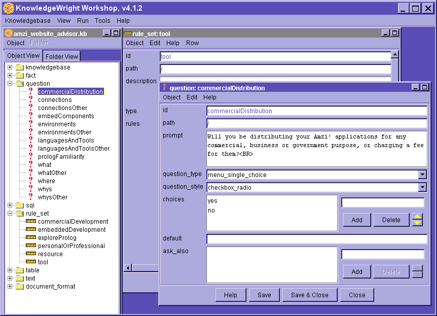

KnowledgeWright Overview
KnowledgeWright Overview
KnowledgeWright Overview
KnowledgeWright Overview
KnowledgeWright is an embeddable, extendable expert system and knowledge engineering environment from Amzi!. It can be embedded in everything from web servers to Visual Basic. The reasoning engine can be extended to accomodate a wide variety of knowledge structures and reasoning algorithms. And KnowledgeWright has a full graphical user interface for developing your own knowledgebases called the Workshop.
Knowledgebases, also called expert systems, allow expertise of the few to be disseminated to the many.
They do this by encoding an expert's knowledge in discrete, declarative 'chunks' of knowledge, without the need for conventional programming. A reasoning engine applies that knowledge to specific cases, very much the way a human expert would, by having a dialog with the user.
Unlike other ways of disseminating knowledge, the user does not have to find what they are looking for in a knowledge base. Instead, the reasoning engine, using the knowledgebase, probes the user for information about a particular situation as needed, and finds the appropriate recommendations for that user, based on their situation.
For example, the diagnostic knowledge of a company's technical support people can be stored in a knowledge base and deployed on the Web. A user dialog with the reasoning engine would be very similar to a conversation with a technical support person, and, if successful, the reasoning engine would tell the user how to resolve the problem at hand.
Similarly, the sales expertise of a company could be encoded in a knowledgebase, allowing visitors to a Web site to have the benefit of carrying out a dialog with a reasoning engine that helps them find the right products for them.
These are two general examples, but there are many other advisor type, expert system, knowledgebase applications. For example, a coaching software product that has a knowledgebase for making workout recommendations, or insurance form expert for helping file Medicare claims, or a job advisor on a work placement website.
One of the major difficulties with building expert system/knowledgebases is that the sort of non-precise knowledge that typifies them varies widely from one problem domain to another. Further, the way in which the knowledge is applied varies as well. And the expertise quite often requires integration with other sources of information.
KnowledgeWright is designed to be easily molded to any sort of domain expertise, type of reasoning, collection of supporting data, types of actions triggered, and deployment. This means KnowledgeWright can be configured to provide a near-perfect knowledge development, test, and deployment environment for a given domain of expertise.
KnowledgeWright Architecture
A particular molding of KnowledgeWright for a domain is called a Jig. Its function is similar to its manufacturing counterpart, being its a specialized tool for building a certain type of thing.
KnowledgeWright has a Basic Jig that is the foundation of the other jigs, and provides generalized advice and problem solving expert system capabilities. Other specialized jigs are available as well, and it is possible to create customized jigs for particular situations.
A Knowledgebase is composed of a number of different types of knowledge objects. These objects contain the actual knowledge. Examples of knowledge objects include: question objects, for asking the user questions; rule set objects for expressing relationships; table objects similarly used; and text objects for dynamically composing documents. Different jigs might support different types of objects.
Each object has properties that define that object. For example, a question has a "prompt" property which is the query to display to the user. A text object, not surprisingly, has a "text" property which is the document or a piece of a document.
The Workshop is a graphical environment and contains both editing tools and testing/debugging tools. These allow for the creating and maintenance of a knowledgebase, and for the test execution of that knowledgebase.
The editing tools are driven by a schema describing the particular knowledge objects used in a particular jig.
The test and debug tools make use of the particular reasoning strategy used for a particular jig. They access that reasoning engine through a standard KnowledgeWright API (Application Program Interface) that provides a uniform dialog for runtime communication.
Because the knowledgebase and reasoning engine communicate via the standard KnowledgeWright API, it is possible to have a variety of runtime deployment options. A Web CGI interface and stand-alone Java and Visual Basic interfaces are included with the package, as well as samples for how to embed KnowledgeWright in applications written with other development tools.
The Workshop provides a graphical environment for creating, editing, maintaining and testing a knowledgebase. The editing environment is shown below.

The screen shot shows a sample of a knowledgebase being developed with the Basic Jig. Notice the trees on the left which can offer different organizational views of the knowledgebase, and the knowledge object edit windows on the right.
You can run, test, and debug a knowledgebase from within the KnowledgeWright Workshop. Here's a sample question dialog box from running a knowledbase in the Workshop.
After gathering a bunch of information, the test runtime puts the solution up. In this case, its actually a generated HTML document. You can see also the status and trace windows that let you know how and what the reasoning engine is doing.
Here you see the answer to the 'goal' called "main_doc" which recommends resources and products to a visitor to our Web site.
Part of the KnowledgeWright architecture is a standard API (application program interface) for communicating with a knowledbase, called the KWI. This makes it easy for any application program to communicate with a conforming knowledgebase and reasoning engine.
The nature of the API is relatively abstract, and defines a dialog between a calling program and the reasoning engine. It basically allows the caller to initiate problem solving and assert known information, and allows the reasoning engine to report on results or specify actions to take, and to ask for further information to be gathered as needed.
It is the KWI that makes it possible for the KnowledgeWright Workshop to test run and debug knowledgebases developed with any pre-provided or custom built KnowledgeWright Jigs.
The KWI is also used to implement the various runtime interfaces provided with KnowledgeWright, including a stand-alone runtime and a Web-based interface. Sample applications using the interfaces are provided for other application programming environments.
The KWI makes it possible to provide a number of runtime environments for KnowledgeWright, as well as make it easy to integrate KnowledgeWright components in other larger application frameworks.
Runtimes distributed with the product include:
The KnowledgeWright product line has a number of pre-built jigs. We can build custom jigs for you as well.
The Basic Jig is the foundation on which many other jigs can be built. It provides a basic goal-seeking reasoning engine and can be used for a wide variety of advisor-type applications. It includes knowledge objects for:
The reasoning engine starts with one or more goals, and seeks to find values for them. These can have simple values, or be complex text objects.
For example, the goal might be to find 'advice' and the value for advice is determined by a number of rules, and those rules depend on asking questions of the user and/or a database. Or, the goal might be to generate 'proposal' where the proposal is a text object that is composed of dynamic entities whose values are determined by rules which in turn ask questions, etc.
The Support Jig recognizes that technical support people think of two types of conditions in determining a resolution to a support problem. The first are environment and release conditions, as a particular problem might occur in a given release on a given operating system. The second are the actual diagnostic symptoms used to determine the particular problem.
Accordingly, the 'solution' knowledge objects of the Support Jig separate these two types of conditions. This makes it much easier to maintain a support knowledgebase in the world of changing environments.
There are different types of advice that a 'solution' might entail, and the knowledge objects recognize this as well. These include background information, pointers to document, workarounds if its a bug, fixes if its not, etc.
Further the Support Jig includes the ability to e-mail the information gathered from any session that did not resolve the user's problem, to the technical support staff.
There are a number of ways in which KnowledgeWright Jigs can be customized for a particular application:
For example, one customer wanted to provide detailed workout advice to athletes based on a large number of physiological factors. The domain expert organized the knowledge about the effects of each factor in tables, and wanted to see those tables used in a cumulative, weighted way in determining a final workout recommendation.
The custom prototype for that client was based on the Basic Jig, and included additional knowledge objects for representing the physiological factors. These 'factor' objects contain the tables defining the effects of the factor, and places to specify when the table will apply and how to weight the recommendations of the table based on conditions.
The reasoning engine incorporates a strategic layer that uses the Basic Jig goal seeking behavior for getting what's needed for each factor, but then combines the factors using a weighted average algorithm.
This particular application gathers information both from the athlete him/herself and a database of workout history kept for the athlete by the calling program, which in this case is a Visual Basic application.